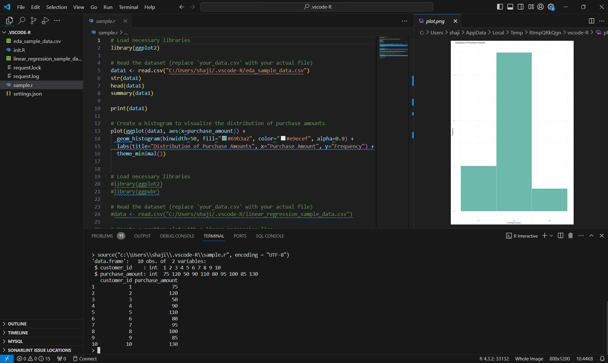
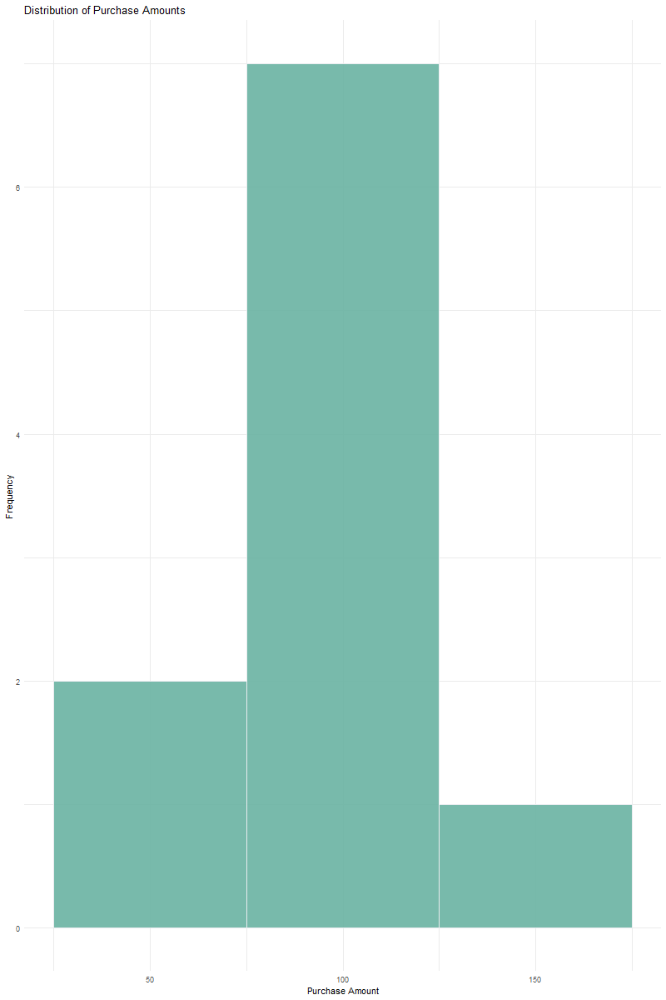

Exploratory Data Analysis (EDA) is a critical phase in data analysis that involves summarizing the main characteristics of a dataset. In this blog post, we'll walk through the process of EDA using R, focusing on data visualization.
The Problem
Let's consider a hypothetical scenario where we have a dataset containing information about customer purchases, and we want to understand the distribution of purchase amounts.
Thought Process
Before diving into code, it's essential to define our goals. In this case, we aim to visualize the distribution of purchase amounts to identify any patterns or outliers that may require further investigation.
Data Analysis Code Snippet & Visualization
 
The Solution
The generated histogram will provide insights into the distribution of purchase amounts. Analyzing the histogram, we can identify common purchase amounts and spot any anomalies or unexpected patterns.
Conclusion
EDA is a powerful tool for gaining a preliminary understanding of your data. By combining visualization techniques with thoughtful analysis, you can uncover valuable insights that guide further steps in your data analysis journey.